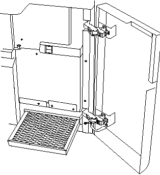
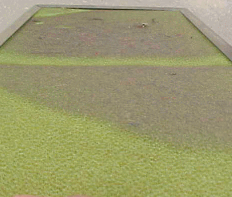

This procedure describes how to remove, clean, and install the main blower air intake filter for the DxI instrument.
Perform this procedure when:
Performing PMs as specified in the PMI procedure.
The reagent storage module temperature or Peltier temperature is out-of-limit (high).
The reagent storage module duty cycle is nearly 100%.
Note: Peltier failure can cause reagent storage module temperature errors; however, before disassembling and servicing the reagent storage module, check the intake air filter.
Remove the air intake filter from the instrument.
Caution: To prevent dust buildup on critical components such as PCBs, do not run the instrument for extended periods of time without the air filter in place.
Open the lower right door on the front of the instrument.
Locate the filter near the bottom of the instrument (below the power supply).
Pull the filter forward until it is clear of the instrument.
Caution: Some early instruments have a rivet near the front and just above the filter. To prevent this rivet from catching on the filter, push downward on the filter surface as it is removed from the instrument.

Inspect the air filter, and if it contains large amounts of dust and dirt clean it.
Caution: Do not blow air through the filter or use a brush to clean it. Doing so creates excessive dust in the laboratory.
Figure 53: Dirty air filter (bottom view)

Clean the filter using one of the two following methods:
Vacuum the intake air filter.
Note: Vacuuming is the preferred (tested) method. It is quick and allows the filter to be reinstalled immediately after cleaning.
Locate a vacuum cleaner with a large capacity. Portable, battery operated vacuums usually do not have adequate capacity or volume of airflow.
Vacuum most of the dust and dirt from the surface of the filter.
Wash the air intake filter.
Caution: To prevent instrument operation problems, do not install a wet or damp air intake filter.
Note: Washing the filter is messy and requires drying the filter before reinstalling it.
Hold the dirty side of the filter downward and run water from the tap through the clean side until the filter is clean.
Tap out excess water from the filter.
Note: Air can be used to dry the filter, but the filter should first be tapped to remove excess water.
If no air is available for drying the filter, then place the filter in a location where room temperature or warmer air is flowing.
Note: The rear of the DxI instrument has a warm air exhaust. Placing the damp filter in that area can speed drying time.
Install the clean air intake filter.
Note: The air flow direction through the filter is marked on the aluminum extrusion around the filter. Air moves upward through this filter.
With the access door open to 90 degrees and the filter screen facing upward, insert the filter into the filter slot.
Caution: Some early instruments have a rivet near the front and just above the filter. To prevent this rivet from catching on the filter, push downward on the filter surface as it is slid into place.
Carefully slide the filter fully into place. The filter is completely seated when the only part of the filter extending out of the slot is the aluminum extrusion of the filter (or about 3/4 in).
When the filter is seated fully, close the lower right access door.